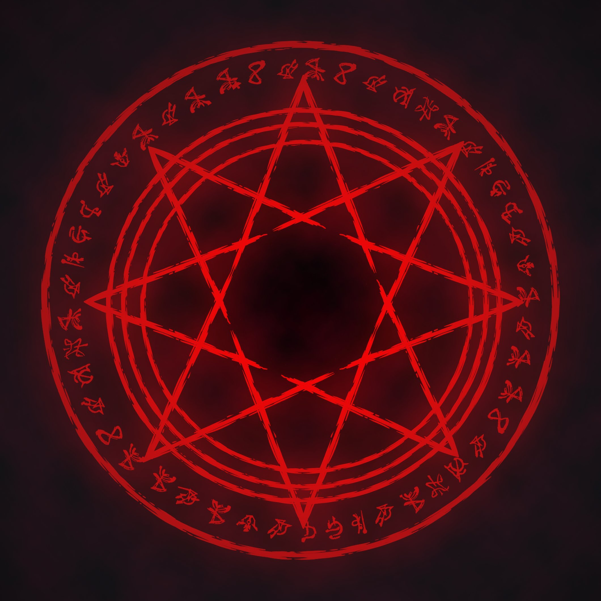
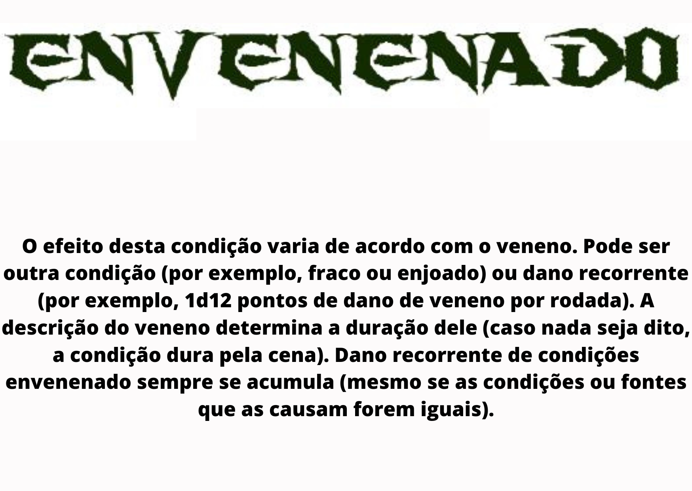
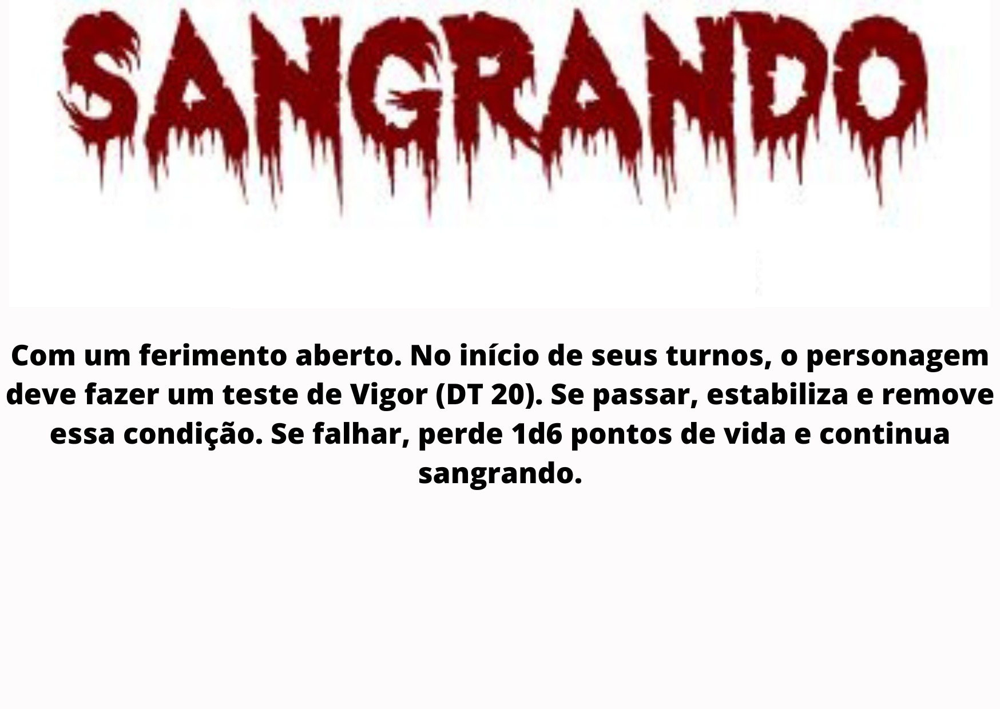
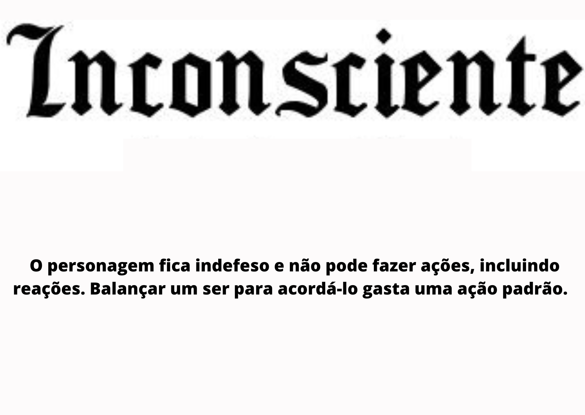

ligado com a seção de armas e equipamentos, 5 por ponto de força e
se ultrapassar o limite sofre penalidade de -5 em defesa e
deslocamento reduzido em 3m.
Movimento:
Perícias Treinadas:
bullet list com box de quantidade de perícia possuído
Rituais Aprendidos:
bullet list com os rituais aprendidos e botão no ritual para
descrever ele




classes
Um perito em armas brancas e de
fogo, este agente serve como a linha de frente na
luta contra o Outro Lado. Jogue com um combatente se quiser ser perigoso e durão. Treinado para lutar com todo
tipo de
armas, e com a força e a coragem para
encarar os perigos de frente, É o tipo de
agente que prefere abordagens mais
diretas e costuma atirar primeiro
e perguntar depois.
Com conhecimento, esperteza e
lábia, este agente é focado em resolver problemas
diversos. Jogue com um especialista se quiser ser
versátil e habilidoso. Um agente que confia mais
em esperteza do que em força
bruta. Um especialista se vale
de conhecimento técnico,
raciocínio rápido ou mesmo
lábia para resolver mistérios
e enfrentar o paranormal.
Um estudioso do paranormal, que
busca entender os mistérios dos elementos e
usá-los a seu favor. Jogue com um ocultista se
quiser dominar rituais e os poderes do Outro
Lado — mas saiba que todo poder tem um preço. O Outro Lado é misterioso, perigoso
e, de certa forma, cativante. Muitos
estudiosos das entidades
se perdem em seus reinos
obscuros em busca de poder,
mas existem aqueles que
visam compreender e dominar
os mistérios paranormais para
usá-los para combater o próprio
Outro Lado. Esse tipo de agente
não é apenas um conhecedor
do oculto, como também possui
talento para se conectar com
elementos paranormais.
marcar uma checkbox e o conteúdo vai pra o topo da página
origens
acadêmico
agente de saúde
amnésico
artista
atleta
chef
criminoso
cultista arrependido
desgarrado
engenheiro
executivo
investigador
lutador
magnata
mercenário
militar
operário
policial
religioso
servidor público
teórico da conspiração
T.I.
trabalhador rural
trambiqueiro
universitário
vítima
revela depois de uma checkbox e ir pra cima as perícias treinadas
colocar mais 4 fileiras com os bônus de perícia
Armas e equipamentos
Um machado grande e pesado, usado no corte de árvores largas.
Um arco e flecha comum, próprio para tiro ao alvo.
Este arco moderno usa materiais de alta tensão e um sistema de
roldanas para gerar mais pressão. Ao contrário de outras armas de
disparo, permite que você aplique seu valor de Força às rolagens
de dano.
Uma besta pesada, capaz de disparos poderosos. Exige uma ação de
movimento para ser recarregada a cada disparo.
Um cilindro de madeira maciça. Pode ser um taco de beisebol, um
cacetete da polícia, uma tonfa ou apenas uma clava envolta em
pregos ou arame farpado. Você pode empunhar um bastão com uma mão
(dano 1d6) ou com as duas (dano 1d8).
Este lança-foguetes foi concebido como uma arma anti-tanques, mas
também se mostrou eficaz contra criaturas. A bazuca causa seu dano
no alvo atingido e em todos os seres num raio de 3m; esses seres
(mas não o alvo atingido diretamente) têm direito a um teste de
Reflexos (DT Agi) para reduzir o dano à metade. Você pode disparar
o foguete num ponto qualquer em alcance médio, em vez de num ser
específico; nesse caso, não precisa rolar ataque e não tem chance
de errar (mas também não acerta nenhum ser diretamente). A bazuca
exige uma ação de movimento para ser recarregada a cada disparo
Esta arma da antiguidade exige uma ação de movimento para ser
recarregada a cada disparo.
Um cabo de madeira ou barra de ferro longo. Inclui cajado o bo
usado em artes marciais. É uma arma ágil. Além disso, pode ser
usado com Combater com Duas Armas (e poderes similares) para fazer
ataques adicionais, como se fosse uma arma de uma mão e uma arma
leve.
Um pedaço de corrente grossa pode ser usado como uma arma bastante
efetiva. A corrente fornece +2 em testes para desarmar e derrubar.
Uma arma medieval, como uma espada longa dos cavaleiros europeus
ou uma cimitarra sarracena. Você pode empunhar uma espada com uma
mão (dano 1d8) ou com as duas (dano 1d10).
Arma de fogo longa e com cano liso. A espingarda causa apenas
metade do dano em alcance médio ou maior
Uma lâmina longa e afiada, como uma navalha, uma faca de churrasco
ou uma faca militar (facas de cozinha pequenas causam apenas 1d3
pontos de dano). É uma arma ágil e pode ser arremessada.
Esta espada de lâmina fina e comprida é usada por esgrimistas.É
uma arma ágil.
A arma de fogo padrão da maioria
dos exércitos modernos. É uma arma automática.
Esta arma de fogo é bastante popular
entre fazendeiros, caçadores e atiradores esportistas.
Esta arma de fogo de uso militar
é projetada para disparos longos e precisos. Se for
veterano em Pontaria e mirar com um fuzil de precisão (veja a página 87), você recebe +5 na margem
de ameaça de seu ataque.
Uma ferramenta agrícola, o gadanho
é uma versão maior da foice, para uso com as duas
mãos. Foi criada para ceifar cereais, mas também
pode ceifar vidas.
Esta arma de fogo é bastante popular
entre fazendeiros, caçadores e atiradores esportistas.
Uma haste de madeira com uma ponta metálica afiada, a lança é uma arma arcaica, mas usada
ainda hoje por artistas marciais. Pode ser arremessada.
Equipamento militar que esguicha
líquido inflamável incandescente. Um lança-chamas
atinge todos os seres em uma linha de 1,5m de largura
com alcance curto, mas não alcança além disso. Faça
um único teste de ataque e compare o resultado com
a Defesa de todos os seres na área. Além de sofrer
dano, seres atingidos ficam em chamas.
Ferramenta útil para cortar madeira,
pode ser facilmente encontrada em canteiros de obras
e fazendas. Pode ser arremessada.
Uma ferramenta importante para lenhadores e bombeiros, um machado pode causar
ferimentos terríveis.
Bastão com uma cabeça metálica cheia de
protuberâncias
Uma lâmina longa, muito usada como
ferramenta para abrir trilhas.
Normalmente usada para demolir paredes,
também pode ser usada para demolir pessoas. Use
estas estatísticas para outras ferramentas de construção civil, como picaretas.
Esta ferramenta comum pode ser usada
como arma na falta de opções melhores.
Uma arma de fogo pesada, de
uso militar. Para atacar com uma metralhadora, você
precisa ter Força 4 ou maior ou gastar uma ação de
movimento para apoiá-la em seu tripé ou suporte
apropriado; caso contrário, sofre –5 em seus ataques.
Uma metralhadora é uma arma automática.
Enorme e pesada, esta espada de 1,5m
de comprimento foi uma das armas mais poderosas
em seu tempo.
Uma ferramenta capaz de causar ferimentos profundos; sempre que rolar um 6 em um
dado de dano com uma motosserra, role um dado
de dano adicional. Apesar de potente, esta arma é
desajeitada e impõe –20 O nos seus testes de ataque.
Ligar uma motosserra gasta uma ação de movimento.
Dois bastões curtos de madeira ligados
por uma corrente. É uma arma ágil.
Uma arma de mão comum entre policiais
e militares por ser facilmente recarregável.
Uma faca de lâmina longa e pontiaguda,
usada por cultistas em seus rituais. É uma arma ágil.
A arma de fogo mais comum, e uma das
mais confiáveis.
Esta arma de fogo automática
pode ser empunhada com apenas uma mão.
adicionar as descrições quando clicadas na arma e subir o tópico
escolhido por checkbox para cima ( coluna 1 )
Modificações para Armas
Com um cano mais longo, que aumenta
a precisão dos disparos, a arma fornece +2 nos testes
de ataque.
. A arma é modificada para disparar munição de maior calibre, aumentando seu dano
em mais um dado do mesmo tipo. Por exemplo, um
revolver de calibre grosso causa 3d6 pontos de dano,
enquanto um fuzil de precisão causa 3d10. Armas com
esta modificação precisam usar munição específica
de calibre grosso. Munição de calibre grosso possui o
mesmo custo em categoria de munição normal, mas
não pode ser usada em armas normais.
Fabricada para ser mais precisa e balanceada, a arma fornece +2 nos testes de ataque.
Apenas para armas automáticas.
Um sistema de amortecimento reduz o coice da arma,
anulando a penalidade em testes de ataque por disparar rajadas.
A arma possui lâmina especialmente afiada
ou foi fabricada com materiais mais densos. Fornece
um bônus de +2 nas rolagens de dano.
A arma possui modificações para ocupar
menos espaço e chamar menos atenção. Se for uma
arma de fogo, pode ser desmontável, se for um bastão pode ser retrátil, se for uma espada, pode ter a
lâmina dobrável e assim por diante. Reduz o número
de espaços ocupados em 1, fornece +5 em testes de
Crime para ser ocultada e permite que você faça
esse teste mesmo que não seja treinado na perícia.
Estas balas são feitas para se expandir
durante o impacto, produzindo ferimentos terríveis.
Esta modificação só pode ser aplicada em balas curtas
e longas e aumenta o multiplicador de crítico em +1.
Estas munições possuem uma gota de
mercúrio ou glicerina, que fazem a bala explodir ao
atingir o alvo. Esta modificação só pode ser aplicada
em balas curtas e longas e aumenta o dano causado
em +2d6.
O mecanismo de ação
da arma é modificado para disparar várias vezes
em sequência. A arma se torna automática.
Um laser interno cria um reflexo vermelho num retículo luminoso, que é visto pelo atirador
e ajuda-o a realizar disparos mais letais. Aumenta a
margem de ameaça em +2.
A arma possui uma luneta com
marcações de medidas, ideal para disparos precisos de
longa distância. Aumenta o alcance da arma em uma
categoria (de curto para médio, de médio para longo,
de longo para extremo) e permite que a habilidade
Ataque Furtivo seja usada em qualquer alcance.
A arma possui lâmina afiada como uma
navalha ou foi fabricada com materiais maciços. Seja
como for, seus golpes possuem impacto terrível. Aumenta a margem de ameaça em +2.
Um silenciador reduz em –10 a penalidade em Furtividade para se esconder no mesmo
turno em que atacou com a arma de fogo.
A arma possui cabo texturizado, bandoleira
e outros acessórios que facilitam seu manuseio. Você
pode sacar a arma como uma ação livre.
A mira tem um sistema eletrônico que sobrepõe imagens visíveis e imagens em
infravermelho, criando um contraste entre zonas
frias e quentes. Ao disparar com a arma, você ignora
qualquer camuflagem do alvo.
ligar com lá em cima e usar checkbox para criar linhas lá ( usar
na terceira coluna), salvas com um enter no final da linha
perícias
acrobacia
adestramento
artes
atletismo
atualidades
ciências
crime
diplomacia
enganação
fortitude
furtividade
iniciativa
intimidação
intuição
investigação
luta
medicina
ocultismo
percepção
pilotagem
pontaria
profissão:
reflexos
religião
sobrevivência
tática
tecnologia
vontade
colocar uma checkbox para as perícias irem para cima